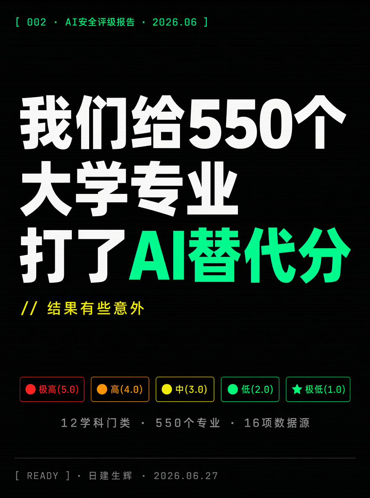
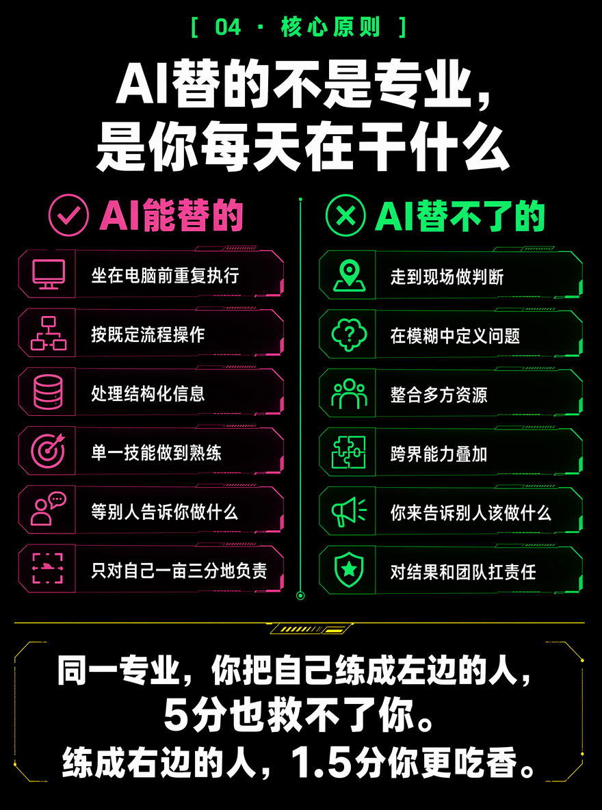
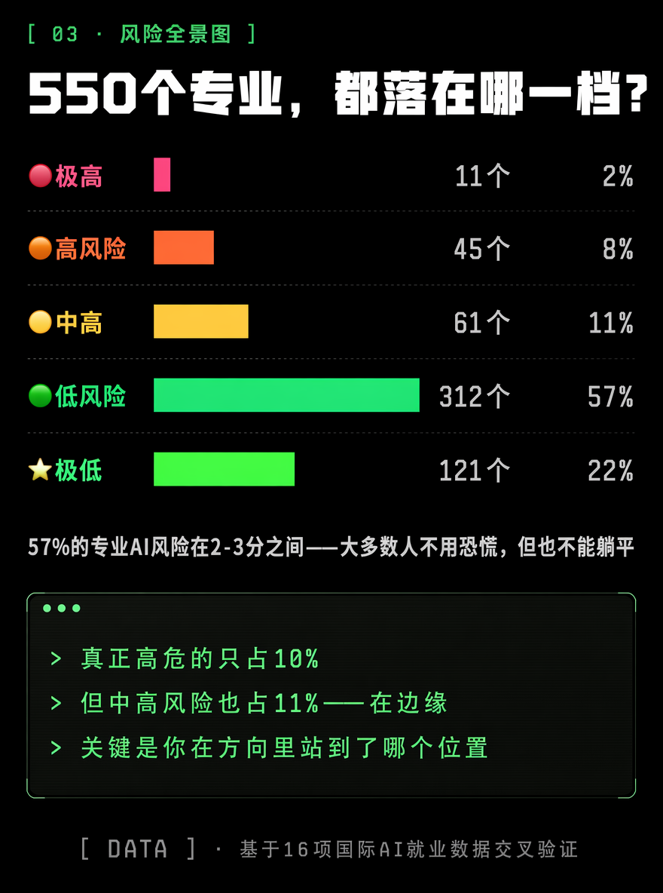
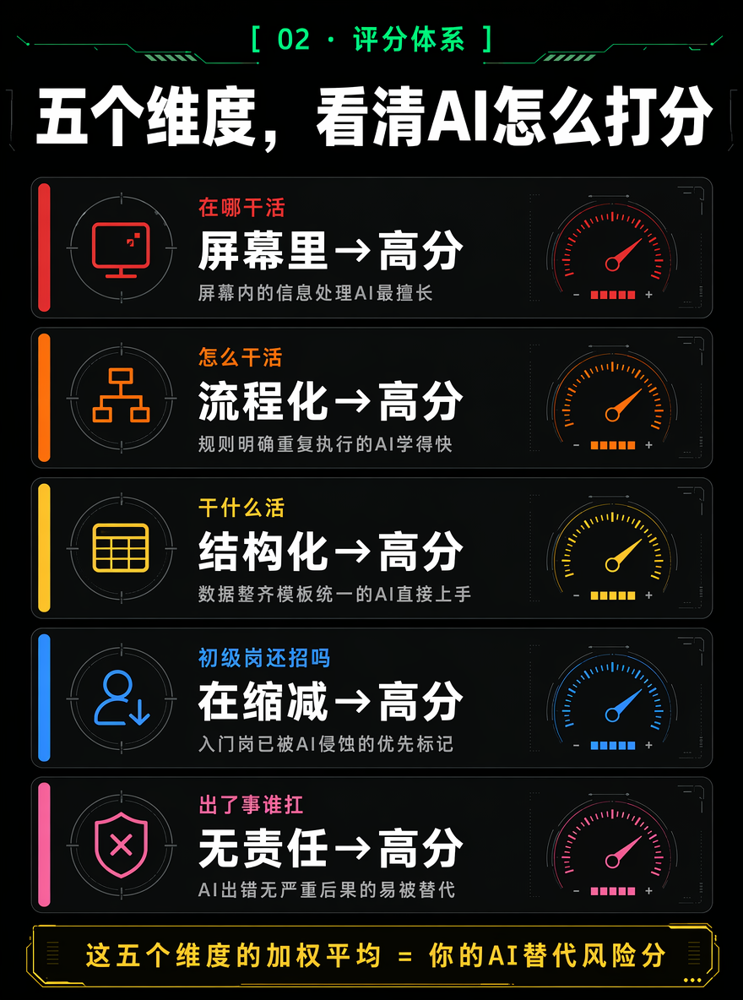
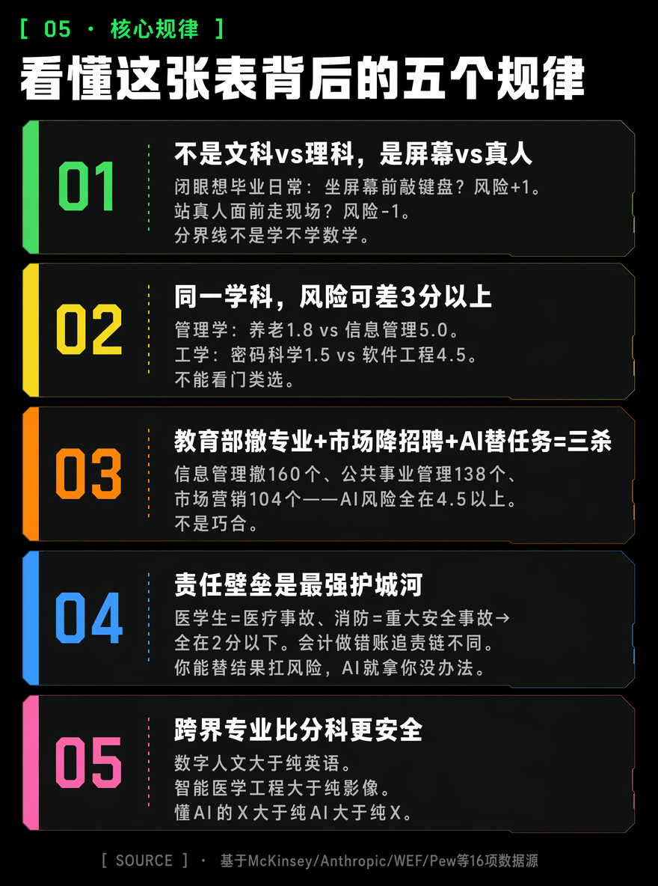
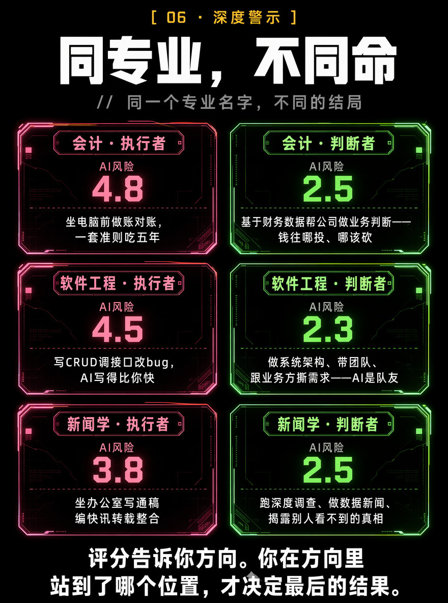
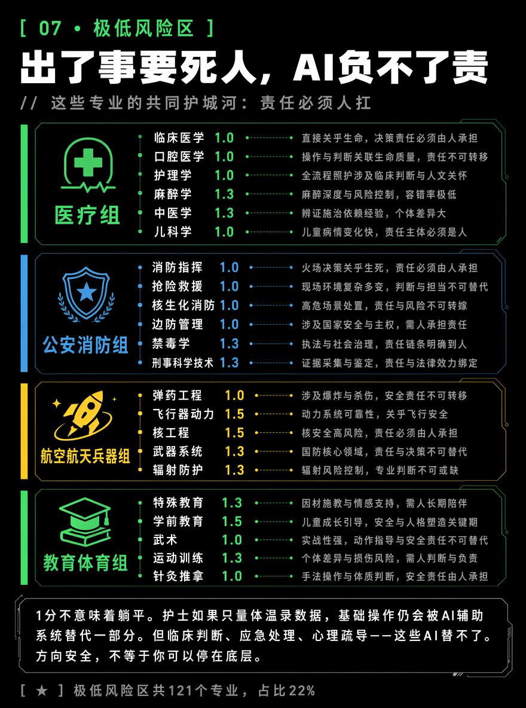

⚠️ 看表之前，请先读完这一段：
这个评分评的是"最普通的毕业生，干着最常规的岗位"。
同一个4.8分的专业，有人被AI追着跑，有人带团队做决策年薪翻三倍。同一个1.5分的专业，有人重复基础操作混日子，十年后也被替代了。
AI替代的从来不是"专业名字"，而是你每天具体在干什么。



🔴 极高风险区（4.5-5.0）
共同特征：产出标准、流程可编码、屏幕里完成、初级岗先挨刀。
| 信息管理与信息系统 | 5.0 | 全国撤160布点，第一 |
| 基础翻译/英语(非师范) | 5.0 | GPT暴露度0.82 |
| 公共事业管理 | 4.8 | 撤138布点 |
| 市场营销(通用) | 4.8 | 撤104布点 |
| 基础会计/审计 | 4.8 | 86%记账可自动化 |
| 秘书学 | 4.8 | AI日程+文档+纪要 |
| 广告学 | 4.7 | AI素材+投放 |
| 编辑出版学 | 4.7 | AI写稿排版 |
| 工商管理(通用) | 4.5 | 泛而不精 |
⚠️ 这个区的专业不是死刑。从"执行者"变成"决策者"，AI风险从5.0降到2.5。
🟠 高风险区（4.0-4.4）
| 软件工程 | 4.5 | 初级↓~20% |
| 信用管理 | 4.5 | ATE 0.43-0.47 |
| 商务英语 | 4.3 | AI翻译已替代 |
| 网络工程 | 4.3 | AI运维 |
| 物联网工程 | 4.2 | 标准化连接AI化 |
| 财务管理 | 4.2 | 报表分析AI化 |
| 电子商务 | 4.0 | AI运营+客服 |
| 物流管理 | 4.0 | AI路径优化 |



⭐ 极低风险区（1.0-1.9）
共同特征：出了事要死人，AI负不了责。
| 临床医学 | 1.0 | 诊断+治疗+责任 |
| 口腔医学 | 1.0 | 精细手工+判断 |
| 护理学 | 1.0 | 70%任务难自动化 |
| 助产学 | 1.0 | 分娩必有人在场 |
| 消防指挥 | 1.0 | 火灾现场判断 |
| 弹药工程 | 1.0 | 弹药+爆炸 |
| 麻醉学 | 1.3 | 术中实时容错零 |
| 刑事科学技术 | 1.3 | 现场勘查+物证 |
⚠️ 比整张表都重要
AI替代的从来不是一个"专业名字"。它替代的是"可以被编码的重复性执行工作"。
临床医学1分，但如果你只负责量血压录数据，AI替你不难。软件工程4.5分，但如果你做架构设计带团队，AI拿你没辙。
不管你报了哪个专业——你在方向里站到了哪个位置，是顶层的判断者，还是底层的执行者，才决定了你最后会不会被替代。